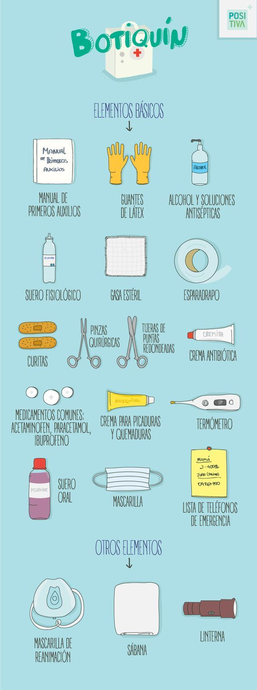

Los inmprsindibles de nuestro botiquín

Tanto el botiquín de primeros auxilios como el dispensario
médico que tengamos en casa deben contar con unos elementos
imprescindibles.
Botiquín de primeros auxilios:
1. Antisépticos. Previenen la infección evitando
que los gérmenes penetren por la herida.
2. Vendas hemostáticas. Son útiles en el
control de hemorragias.
Conviene que sean de diferentes tamaños.
3. Elementos para hacer una cura de heridas.
El agua oxigenada, las gasas esterilizadas,
el suero fisiológico y el esparadrapo nos permitirán
limpiar y curar de manera rápida una herida. Además,
unas pinzas, tiritas, y unas pequeñas tijeras tampoco deben faltar para realizar pequeñas curas, así como unos guantes de látex o vinilo, que nos protegerán del contacto directo con la sangre y otros fluidos
4. Toallitas de alcohol. Debemos usarlas siempre antes de realizar una cura, para desinfectar nuestras manos. Y nunca aplicarlas directamente sobre las heridas.
5. Pañuelo triangular. Resulta un elemento de mucha utilidad para varias situaciones, como cubrir heridas o quemaduras o improvisar un cabestrillo o un vendaje… Puede tener un tamaño aproximado de 140x100x100 cm.
6. Listado de teléfonos de urgencias de la zona. Una pequeña tarjeta con los números del pediatra o médico de familia, la ambulancia e incluso la policía o los bomberos nunca está demás. Es de esperar que nunca la necesitemos, pero si así fuese, de este modo sabremos donde encontrarla de manera rápida.
Dispensario de medicamentos:
1. Nuestra medicación habitual. Si utilizamos de forma crónica una medicación, es interesante que junto a ella guardemos un papel en el cual indiquemos los medicamentos que tomamos, la dosis y los momentos en los que los tomamos. Esto puede ayudarnos a organizarnos para que no nos falte medicación o bien no tener en exceso. También en caso de urgencia, nuestros familiares pueden indicar y conocer la medicación que tomamos.
2. Analgésicos. Paracetamol o ibuprofeno son los analgésicos habituales que suelen emplearse habitualmente en caso de dolor, fiebre o inflamación (por ejemplo, en el caso de contusiones).
3. Antihistamínicos. Debemos contar con ellos, sobre todo en caso de que seamos alérgicos, tanto a plantas como a alimentos.
4. Antigripales. Los antigripales son medicamentos que asocian varios principios activos y debemos escoger aquellos que se ajusten más a nuestras necesidades. Es común la asociación entre paracetamol (analgésico y para la fiebre), junto a un fármaco especifico para la tos y un descongestivo nasal.
5. Antidiarreicos. Pueden utilizarse con el fin deevitar la deshidratación, causada por las diarreas, en el caso de que se produzca una gastroenteritis. Sin embargo, este tipo de fármacos son aconsejables sólo en caso de viajes. En general, los antidiarreicos no deben emplearse sin consultar al medico/ farmacéutico.
6. Termómetro. Aunque no sea un medicamento, tenerlo en el botiquín nos servirá para cerciorarnos de la temperatura exacta y, si tenemos fiebre, nos indicará cuando será necesario tomar un medicamento antitérmico.